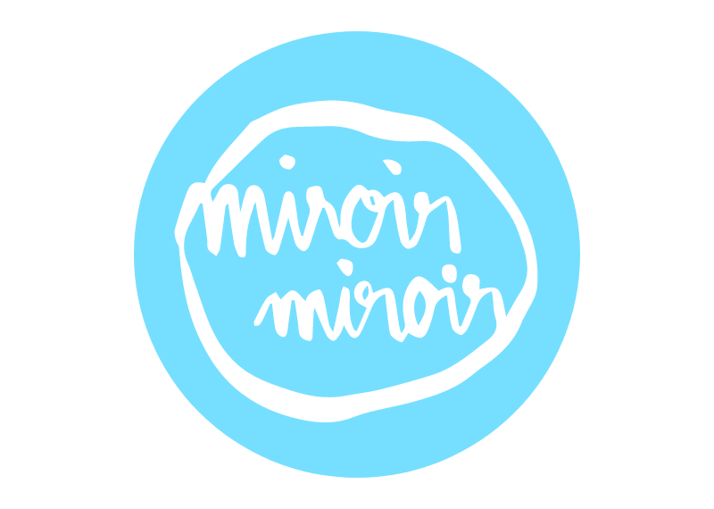

Visual Identity of the Miroir Miroir Podcast,
Binge Audio, 2019.
In Miroir Miroir Jennifer Padjemi speaks about beauty, bodies, norms and
representation. The visual identity echoes the contrast between perception, representation and reality.